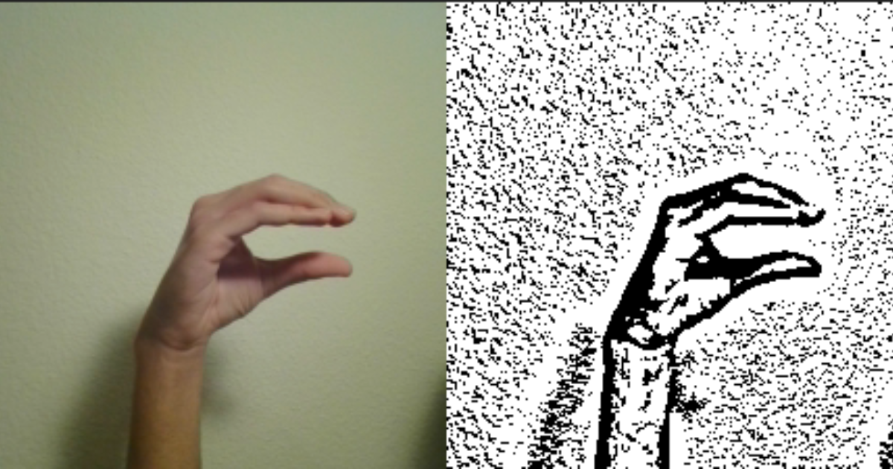

OpenCV Pipeline
At the Core of HandLexa's Image Processing
At the core of HandLexa's formidable image processing capabilities lies an intricately crafted OpenCV pipeline. This meticulously designed sequence of operations serves as the bedrock of HandLexa's ability to interpret sign language gestures with remarkable accuracy and speed.
The Journey Begins: Grayscale Conversion
The journey through HandLexa's OpenCV pipeline begins with a crucial step: the conversion of input images to grayscale. This initial transformation serves a strategic purpose, simplifying subsequent analyses by standardizing pixel intensity levels and removing the complexities introduced by color variations. By homogenizing the visual input in this manner, the pipeline sets the stage for more refined processing, laying a foundation of uniformity upon which subsequent operations can build.
Adaptive Thresholding: Enhancing Gesture Contours
However, it is the application of adaptive thresholding that represents a watershed moment in the image processing journey of HandLexa. This sophisticated technique marks a pivotal transition, where the contours and edges of sign language gestures are meticulously accentuated against the background. Through adaptive thresholding, HandLexa effectively separates the foreground from the background, highlighting the crucial features that define each gesture. This step is akin to sharpening the lens of perception, allowing HandLexa to discern the subtle nuances of hand movements and shapes that are integral to accurate interpretation.
Feature Extraction: Capturing Meaningful Elements
With the contours delineated and the essential features accentuated, the OpenCV pipeline moves forward with precision, embarking on the critical phase of feature extraction. This stage is characterized by a meticulous analysis of the enhanced image data, where HandLexa identifies and isolates the key elements that convey meaning in sign language. Through a combination of advanced algorithms and heuristics, HandLexa extracts the salient features from the input imagery, capturing the intricate gestures and expressions that form the language of the hands.
Transitioning Back to RGB Format
As the journey through the OpenCV pipeline nears its culmination, a final flourish awaits: the transformation back to RGB format. While grayscale and thresholded images serve their purpose within the realm of image processing, the return to RGB format ensures compatibility with downstream processing modules. This seamless transition allows HandLexa to seamlessly integrate with other components of its architecture, facilitating a cohesive and synchronized flow of visual data. By translating the enhanced structural clarity of grayscale images back into the familiar RGB domain, HandLexa ensures that its interpretations are not only accurate but also readily accessible for further analysis and utilization.
Empowering Communication Through Image Processing
In essence, the OpenCV pipeline represents more than just a sequence of technical operations; it embodies the essence of HandLexa's mission to empower users with a transformative medium of communication. Through meticulous image processing techniques, HandLexa breathes life into static visual data, transforming it into a dynamic conduit for understanding and expression. With each step along the pipeline, HandLexa reinforces its commitment to precision, clarity, and accessibility, ensuring that the language of sign is not just seen but truly understood.